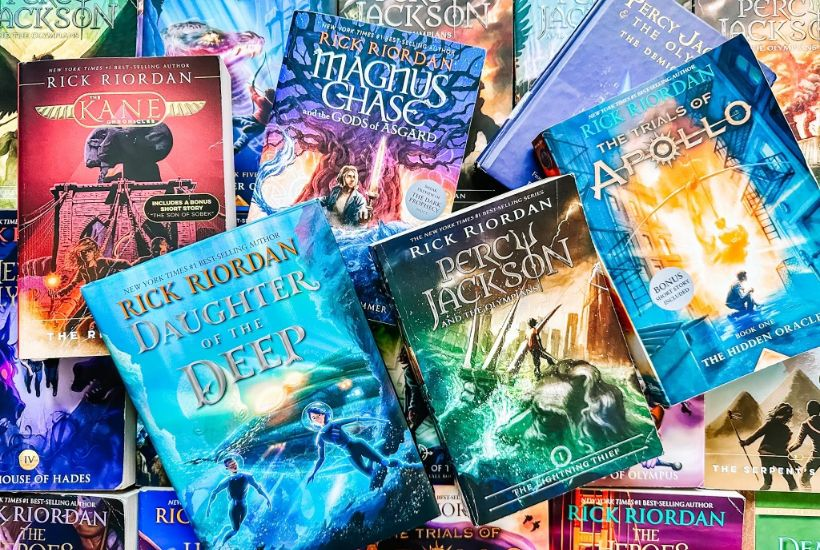

Reading
Reading is more than decoding words; it's a gateway to new worlds, perspectives, and ideas. Each page turned is an invitation to explore realms both real and imagined, to walk in the shoes of characters vastly different from ourselves, and to glean wisdom from the minds of countless authors throughout time. It's a journey of empathy, understanding, and self-discovery. Through reading, we unlock the treasure trove of human experience, tapping into the collective wisdom of generations past and present. It fosters critical thinking, ignites creativity, and fuels curiosity. Whether diving into a gripping novel, dissecting a scholarly article, or simply perusing the morning news, reading expands our minds and enriches our lives. In a world inundated with distractions, reading remains a steadfast anchor, offering solace, inspiration, and a refuge from the chaos of everyday life. It's not merely a pastime; it's a fundamental skill and a lifelong pursuit that empowers, enlightens, and entertains.
Football

Football, more than just a game, embodies the spirit of camaraderie, passion, and perseverance. From the roar of the crowd to the strategic maneuvers on the field, every moment is a symphony of skill and strategy. It unites people of diverse backgrounds under a common goal, fostering a sense of belonging and community. Beyond the spectacle of athleticism, football teaches invaluable lessons in teamwork, discipline, and resilience. Each match is a microcosm of life's challenges, demanding adaptability and determination in the face of adversity. Whether played on pristine pitches or makeshift fields, football transcends cultural and geographical boundaries, captivating hearts and minds worldwide. It evokes raw emotion, from the elation of victory to the agony of defeat, forging bonds that endure long after the final whistle. In its purest form, football is more than a sport; it's a celebration of human potential, a testament to the power of unity and the pursuit of excellence.